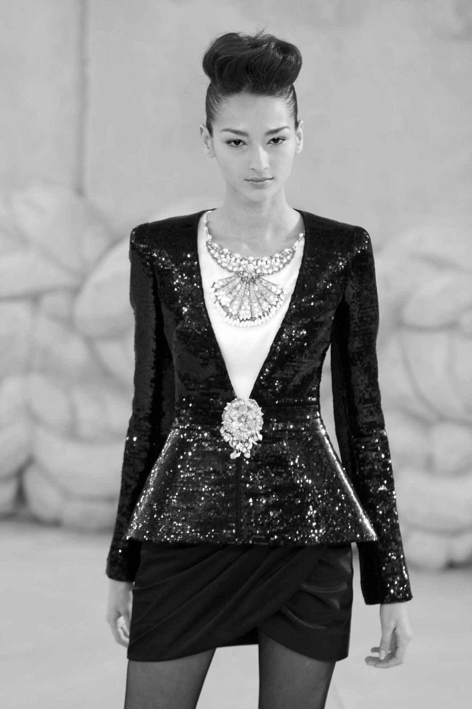
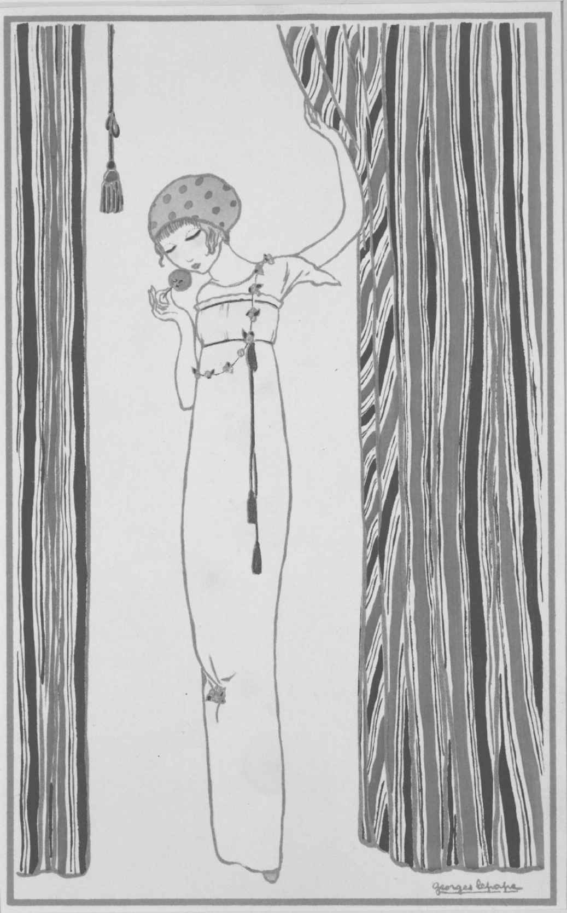
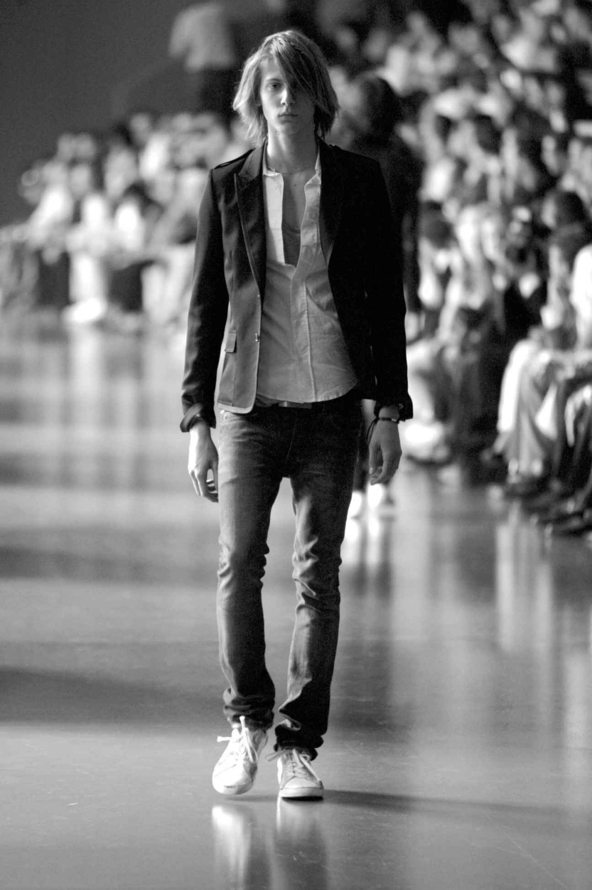
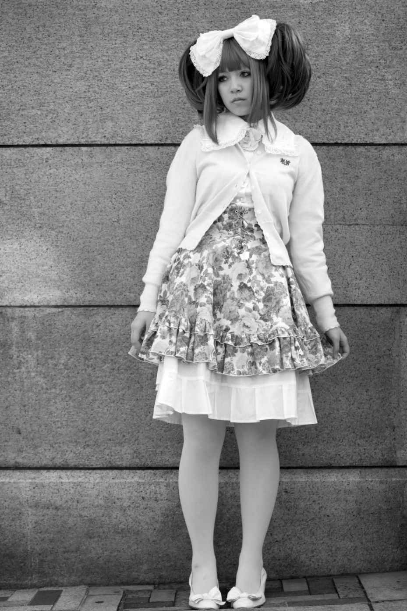

香奈儿2008春夏高级定制时装秀上，一件巨大的品牌标志性开襟毛呢外套模型矗立在秀场中心的旋转平台之上。这件纪念碑似的“外套”以木头制成，配以水泥灰色调的喷涂，在模特们身后高耸着。模特们从“外套”前襟敞开的部分鱼贯而出，昂首阔步地在一众时尚媒体、买手和各界名流前走过，来到品牌的交扣双“C”标志前停步亮相，而后消失在可可· 香奈儿留下的这个符号性标志之中。模特们身着的服装色调简洁，再一次反映出品牌的传统：生动的黑白二色搭配鸽子灰与极浅的粉色。这一系列的服装自品牌的斜纹软呢开襟外套衍生出来，整个香奈儿始终在真正意义或隐喻意义上被这款设计影响着。而这次品牌以当代手法重新打造了这一经典款式，使它显得轻盈而有女人味，褶边处分离出一簇簇叶片装饰，或是在修身剪裁上遍布亮片，下身着略有曲线的半身裙，其精致廓形源自海贝的天然形态。秀场的布置与展示的服装都是品牌渊源的缩影，体现在它们将可可· 香奈儿酷爱的优雅的半裙套装、闪亮的人造珠饰以及层叠的晚礼服所进行的组合之上，同时又融合了品牌目前的设计师卡尔· 拉格斐对当代的敏锐见解。

图2 卡尔· 拉格斐设计的2008版经典香奈儿套装
香奈儿发展成为20世纪最为知名和最具影响力的高级时装店之一，突显了成功时装设计的许多关键元素，显示了设计、文化、商业与至关重要的个性这四者间的相互关系。可可· 香奈儿作为社会和时尚版面的显赫人物在1910年代到1920年代间的崛起，从夜场歌手到高级时装师的神话般的发迹，还有关于她众多情人的绯闻，这些都为她那简洁现代的设计风格赋予了一种刺激且神秘的气息。她的设计本身就耐人寻味，体现了对线条明快而层次简单的日装，以及更女性化且戏剧化的晚装的当代时装追求。她认为女性应该穿着简洁，要像她们身着小黑裙的女仆们一般，当然，克洛德· 巴扬引用香奈儿的这句话是想提醒女性“简单不代表贫穷”。她钟情于混搭天然与人造珠宝，不断借鉴男性着装，这令她蜚声国际。可可· 香奈儿的传记为她带来了公众的注意与好奇心，这对于提高她的时装店的知名度是极为必要的，也让她作为一名设计师和风云人物而引人注目。尤为重要的是，她对品牌进行多元经营，发展出配饰、珠宝以及香水等品类，同时还将自己的设计销售给美国买手，这把她的时尚精髓扩展到了高级时装消费人群之外的一个空前广阔的市场，确保了她在经济上的成功。
1980年代，时装评论家欧内斯廷· 卡特总结了香奈儿的成功，认为其建立在“个人魅力的魔法”之上。与可可· 香奈儿毋庸置疑的设计与造型能力同样重要的，是她对于理想化自我形象的营销能力，以及能够代表自己无可挑剔的顾客形象的能力，这使得她的品牌如此富有吸引力。香奈儿设计了自己的形象，而后将这一形象兜售给整个世界。许多后来者跟随了她的脚步：从1980年代开始，美国设计师唐娜· 凯伦成功地为自己打造出一个不断奋斗的母亲与女商人形象，专为那些像她一样的女性设计服装。与她相反，多纳泰拉· 范思哲则始终脚踩高跟鞋、身着极富魅力的紧身服装出现在镜头前，她富豪般的生活方式同样反映在范思哲（Versace）品牌那些珠光宝气的奢华时装中。
香奈儿现任设计师卡尔· 拉格斐代表了这一命题下另一种不同的表现形式，比起呈现他的消费者们的生活方式，他的个人风格彰显了他作为造诣极深的美学大师的地位。如果说香奈儿是她的追随者们的时尚偶像，代表了一种20世纪初期时髦优雅、流线型灵动女性特质的现代主义理念，那么拉格斐则是为现如今的时代重新建构起来的一个帝王般的时髦标杆。他的个人风格中的关键元素在他于香奈儿麾下工作期间始终如一：深色套装，长发梳向脑后扎起马尾，偶尔会上粉涂成白色。再加上他不时喜欢拿在手里不断扇动的黑色折扇，他的形象令人不禁想起古代的法兰西君王。这些都彰显了高级时装的精英地位，以及香奈儿风格的延续统一，而他不断投身各种各样的艺术及流行文化事业又维持了他走在时尚前沿的公众形象。
香奈儿于1971年辞世，品牌的金字招牌也随之而去，其销售业绩与时尚公信力均开始衰减。在拉格斐的双手操持下，香奈儿品牌得以重振。自1983年加入品牌以后，他为品牌设计了高级时装系列、成衣系列以及配饰产品，较好地平衡了对于品牌特色同一性的需求，以及同等重要的能够反映并预见女性穿着想法的愿望。拉格斐在自由职业阶段为包括蔻依（Chloé）、芬迪（Fendi）等不同成衣品牌工作的丰富经验，充分证明了他的设计实力以及能够创造出足以掀起新潮流、同时修饰美化女性身形的服装这一至关重要的能力。他通过融合经典与流行文化元素来维持香奈儿的影响力，并重振其时尚地位。他的2008春夏高定系列充分体现了这一点，也显示了他的商业头脑。尽管他的年龄在不断增加，品牌的忠实顾客们脑中想起的又始终是他基于经典开襟毛呢外套的各种改良造型，但这一系列的色调是年轻的，灰暗的颜色会配上充满少女感的荷叶边和轻柔织物配饰进行中和。拉格斐因而着眼未来以保香奈儿屹立不倒，并始终鼓动着新的年轻顾客穿上这一标杆品牌。
高级时装设计师的演化
回顾过去的历史，绝大多数服装是家庭自制的，或者是从几间铺子买来织物或辅料后再由本地裁缝和制衣师制作。到了17世纪末，一些裁缝，尤其在伦敦萨尔维街一带，开始以技艺最为纯熟、款式最为时髦而闻名，人们会从其他国家赶来在亨利· 普尔等比较知名的几家定做西装。尽管某些裁缝公司确实在特定时期代表着时髦的风格，但男装设计师们在20世纪下半叶之前始终未能企及与其同业的女装设计师们的地位与名望。“裁缝”这个字眼意味着协同操作，不管是参与西服制作不同环节的各个工匠之间，还是与顾客就面料、风格及剪裁方案选择所进行的深入讨论。与此相反，到了18世纪晚期，女性时装的开拓者们则开始衍化出自己个性化的气质。这反映了女装中的创意与奇想有着更宽广的空间，它还取决于贵族阶层时尚引领者们与她们的制衣人之间逐渐形成的不同关系。尽管哪怕最知名的裁缝师也要与他的顾客非常紧密地就服装风格进行沟通，女装制衣师们却开始强力推出自己的风格。
尽管时装就参与其制作的人数而言一直保持着基本的协同工作流程，但它开始与个人的设计实力和时尚洞察力密切关联起来。这一转变的早期著名典型要数罗斯· 贝尔坦了，在18世纪晚期她为路易十六王后玛丽· 安托瓦内特以及众多的欧洲、俄国贵族创作服装与配饰。她被称为“款式商人”（marchandes des modes ），意为她给礼服加上不同的装饰。不过，“款式商人”这一角色开始转变，部分原因在于贝尔坦在打造时尚造型方面拥有强大的实力。她从当时的重大事件中汲取灵感，比如，她精心制作了一件融合了热气球元素的头饰，以此向孟高尔费兄弟1780年代的热气球飞行致敬。她靠这些金点子为自己带来知名度，虽然同期的埃洛弗夫人与穆亚尔德夫人这些“款式商人”名气也很大，但当时巴黎时装鼎盛之势的最佳诠释者始终是贝尔坦。
1776年，法国以新型公司体制替代了原来的行会制度，提升了“款式商人”的地位，允许她们制造服饰，而不再只是装饰点缀。贝尔坦成了这一公司的首位“大师”，这大大增强了她在时装领域的声望。她为“大潘多拉”制衣，给这具人偶穿上最新款的时装，然后送往欧洲各地市镇和美洲殖民地进行展示。这是在定期出版的时装杂志出现之前进行时装宣传的一种主要方式。通过这种方式，贝尔坦助推了巴黎时装的传播，确定了它在女装界的主导地位。她发展出的广泛客户群以及她跟法兰西王后间的密切关系都确保了她在时装界的地位。有一点值得注意，当时的评论家们惊恐地发现，从贝尔坦的言行举止来看，好像她与她的贵族客户地位相等一般。她的阶层跃升也完成了一次重要的变革，为更多设计师们掌握话语权提供了平台。她很清楚自己的影响力，也笃信自己作品的重要性，她在创造时尚，也在为自己的顾客们打造时尚形象，后者将自己的时尚引领者地位托付给了贝尔坦。的确，她位于巴黎的精品店“大人物”（the Grand Mogul）大获成功，然后又在伦敦开了分店。她革新的风格搭配以及对于历史与时代热点的绝妙借用充分显示了她的设计实力，同时也说明她对于打造宣传攻势的重要性早已了然于胸。她因而成为高级时装设计师的先驱，她们将在19世纪的时尚主导群体中获得一席之地。法国大革命短暂中断了巴黎时装的相关资讯往全球各地的传播。不过，革命甫一结束，法国的奢侈品贸易便迅速重建起来，而各家制衣师都开始力证自己的服装才最为时髦。路易· 伊波利特· 勒罗伊一手打造了约瑟芬皇后和其他拿破仑宫廷女性，以及一大批欧洲贵族的时装风格。1830年代，维多琳等人开始声名鹊起，其地位远在那些默默无闻的制衣师阶层之上。勒罗伊和维多琳，一如在她们之前的贝尔坦，都致力于创造新款设计，开创新的时装风潮，并不断巩固自己的杰出地位，同时帮她们那些有头有脸的老顾客维持显赫声名。但是，绝大多数制衣师，甚至是那些不乏贵族顾客的人，都没能实现设计原创。实际上，她们只对既有款式进行重新组合排列，以适应不同的顾客穿着。各种款式则从最知名的制衣字号那里或者从时装图样上抄袭而来。
不过，除了出现行业领先的女装制衣师之外，时装产业还有另外一面对时装设计师这一概念的演变产生了影响。艺术史学家弗朗索瓦丝· 泰尔塔· 维蒂有过记述，一些艺术家的工作方式类似于今天的自由职业设计师，因为制衣师们会向这些艺术家购买非常详细的时装图样。这些图样将会作为服饰的模板被使用，甚至可能被当作样品直接送到顾客手中。各家制衣师的广告也会附在这些插画的背面，同时标出画中服装的价位。到了19世纪中叶查尔斯· 皮拉特等艺术家开始以“时装与服饰设计师”宣传自己，刊载在当时的巴黎黄页中的“工业设计师”目录中。
整个西方世界也开始形成这个观念，认为服装需要由时装的权威人士来设计，运用特定的技法来明确廓形、剪裁以及装饰。每个市镇都可能有自己最时尚的制衣师，当时装开始随着大众对新款式的渴望而越来越快地变化时，时装设计本身的商业价值也在同步增加。时装设计师这一概念的最终明确不单需要随时可以推出新时装的富有创造力的个人，还要依靠人们对新鲜感与革新不断增长的需求。19世纪见证了中产阶级和富有实业家们的崛起，他们刚刚建立的地位在一定程度上是通过视觉展示来构建的，不管是他们的居所，还是更为重要的他们身上的服饰。高级定制时装开始成为更大的女性群体获得专属与奢华体验的一种渠道，其中美国人在19世纪下半叶成为这个群体中最大的客户群。
在这些变化之外，还有时尚媒体、摄影的发展，以及19世纪末出现的电影，它们使时尚形象得到了空前的广泛传播，且激发了女性对更为丰富多样及更迭迅速的时装款式的欲望。当城市的巨大发展带来更多的个性泯灭，时装成为能够构建身份，并让社会、文化及经济地位一目了然的重要途径。它同时也是愉悦与感官体验的来源，而巴黎的高级定制时装就是这一幻梦与奢靡王国的顶峰。
当“工业设计师”为规模较大的女装制作行业提供着时装设计的时候，高级时装设计师的演化最终构建起时装设计师的定位与形象。尽管1850年代最为著名的高级时装设计师查尔斯· 弗雷德里克· 沃思的成功一方面是依靠他扎实的生意经营，但在其商业努力之外人们看到的更多是他在创新设计中的精彩表达，还有他作为创意艺术家的权威身份，人们选择无条件地追随他的时尚宣言。作为一个在百货公司女装制衣部打磨技艺出身的英国男人，他在自己的职业生涯之初得以出众，一定程度上归因于他是一个从事由女性主导的职业的男性。其实，在1863年2月的《全年》（All the Year Round ）杂志里，查尔斯· 狄更斯就表达过对“嘴上带毛的女帽师”这一现象的厌恶。身为男人，沃思能够以不适用于女性的方式来宣传自己，他也能另辟蹊径地接待他的女性顾客，不考虑她们的身份阶层。他最知名的设计中加入了象牙色薄纱制作的泡泡纱，让人穿起来犹如云绕肩头，各层之间的珠饰与亮片在烛火辉煌的宴会厅中折射出熠熠动人的光辉。
其他高级时装设计师的名望也在不断增强，通常还因他们的皇家客户而日渐声名显著。在英国，约翰· 雷德芬针对这一时期女性的角色转变，制作了以男士西装为设计基础的高级定制礼服，还为帆船运动制作了运动套装。在法国，让娜· 帕坎等女性高级时装设计师制作出能够修饰女性身体的服装，完美体现了理想中巴黎女人的形象。许多顾客来自美国，因为巴黎依旧引领着时尚。一方面为了提升设计师的地位，一方面为了提供一种具有辨识度的身份与个性以推介自己的品牌，各家时装店明确了高级时装设计师即是革新者与艺术家这一观念。塞西尔· 比顿形容英王爱德华时代的女性在努力不使自己的制衣师名字泄露。这些女性希望因为自己的时尚感而受到肯定，并始终保持自己的知名度高于其时装师。不过，高级时装店已经发展出它们独有的招牌款式，这些服装赋予了穿着它们的女性以鲜明的时尚地位。

图3 保罗· 普瓦雷精致的帝政风高腰线礼服裙，乔治· 勒帕普1911年绘
20世纪的前几十年里，保罗· 普瓦雷和露西尔等设计师开始蜚声国际。他们为戏剧明星、贵族及富豪们制作服装，并且宣扬着他们自身作为颓废的社会名流的身份。普瓦雷此时已经是现代意义上的时装设计师。他以标志性的奢华风格以及他创造的那些廓形逐季变化且造型夸张的款式而闻名于世。乔治· 勒帕普笔下的时装插画生动展示了普瓦雷那条1911年的著名帝政风高腰线礼服的廓形，这件设计作品背弃了英王爱德华时期紧身束腰的时装样式。他那些布满刺绣的晚礼服与歌剧院外套汲取了从现代主义到“俄罗斯芭蕾” [1] 等各种当代艺术与设计灵感，那些强有力的高级时装形象的格调又通过他自己的香水产品销售传播得更为深远。普瓦雷同时代的从业者们同样熟稔于利用现代广告与市场营销手段来构造他们各自时装店的形象。大多数人都将自己的设计销售给美国批发商，由他们就买下的每一个款式裁制出数量严格限定的服装。除了为单人定制的各款服装的销售所得，这类销售也给时装店带来了收益，而前者才是高级时装的本义所在。
两次世界大战之间是高级时装的一次鼎盛期，这一时期的玛德琳· 维奥内、艾尔莎· 夏帕瑞丽、可可· 香奈儿等人通过她们的创作定义了现代女性这一概念。她们的成就强调了这样一个事实：长期以来，时装一直都是为数不多的女性能够以创新者与实干家身份获得成功的领域之一，她们领导着自己的业务，同时为无数女性提供自己高级时装工作室的工作机会。确实，高级时装是一项集体协作的事业，大牌时装店由许许多多的工作室构成，每个工作室负责一款设计的不同内容，比如说裁片、立体剪裁或串珠与羽毛等各类装饰。尽管每一件服装都有很多人参与创作，设计师们的想法始终是与作为独立创意个体的艺术家的理念保持一致的。这在一定程度上是因为设计与革新是时装中最受重视的两个方面，毕竟它们是各个系列的基础，又被视为整个过程中最具创新性的要素。特别是，这种对于个体的强调同时也成了一件有效的宣传工具，因为它强调了一个时装品牌的身份，而且真正为时装店提供了一张“脸面”。
尽管不受巴黎高级时装业中施行的那些严格条例的管理，其他国家也发展出了各自的高级时装设计师与定制产业。例如1930年代的伦敦，诺曼· 哈特内尔和维克多· 斯蒂贝尔就强调自己是时装设计师而不仅仅是王室制衣师。在纽约，华伦蒂娜（Valentina）逐渐发展出一种极其简洁的风格，通过吸收现代舞元素来创造一种美式时装身份。而在1960年代的罗马，华伦天奴（Valentino）倡导了一种与众不同的意大利式高级时装，崇尚极度女性化的奢华风格。
进入战后时期，纺织品与劳动力成本上涨使得高级时装更加昂贵。克里斯汀· 迪奥等设计师在经历了1940年代的艰难之后，开始重新沉迷于繁复铺张，他们重视传统的高级定制工艺，在之后的十年里引领着高级时装对全球时装潮流始终如一的统治。从1960年代开始，尽管抛弃型的青少年时装开始兴起，成衣设计师的全球声望也在增长，但高级时装仍然停留在大众的视野里。其重要性虽然有所变化，但迪奥的约翰· 加利亚诺、浪凡的阿尔伯· 艾尔巴茨、香奈儿的拉格斐等几个特别的设计师依旧能够创造出在整个市场所有层面广泛传播的时装。尽管客户数量在不断下降，但成衣产品线、配饰、香水以及为数众多的授权产品仍将高级时装推到了巨大的全球奢侈品市场的头排位置。虽然欧洲的高级时装消费者变少了，但其他市场一直处在此起彼伏的兴盛之中。石油财富让1980年代的中东高级时装销量大幅增加，美元正值强势且人人钟爱显摆的里根时代的美国也是这样，而后共产主义时代俄罗斯创造的巨额财富则贡献了21世纪之初更多的客源。再加上名流文化的显著与红毯礼服的兴起，高级时装设计师们继续制作着每一季的服装系列。即便这些孤品式的设计本身并不能创造什么利润，但它们带来的大量关注巩固着处于高级时装产业核心位置的设计师们始终如一的重要性。
成衣设计师的演化
英国时装记者艾莉森· 赛特尔在她1937年的《服装线》一书中写道，巴黎高级时装行业内部相互联系的性质是行业兴盛的关键。面料、服装以及配饰的设计师和制作商们相互间均密切联系，可以对各自领域内的发展做出及时反应。流行趋势因此得到迅速鉴定，然后收入高级时装设计师们的服装系列之中，这使得巴黎始终保持着它在时装业界的领先地位。令赛特尔印象深刻的还有时装在法国文化中的深植，所有社会阶层的人们都对穿衣打扮和时尚风格抱有兴趣。就像赛特尔所写，高级时装设计师们“通过观察生活来预测时尚”，而这一方法在成衣设计师的演化过程中显得尤为重要。高级时装设计师们发现许多女性希望购买的不仅是紧随当下风格潮流的衣服，这些服饰还得是由时尚品牌设计生产的。
自1930年代初期起，设计师们开始陆续推出一些价位略低的时装系列，以触达更多的受众。吕西安· 勒隆就是一个例子，他开始制作自己名为“勒隆系列”的产品线，销售的成衣价格只有他高级时装系列定价的零头。高级时装设计师们一直开发着成衣服饰，比如1950年代雅克· 法特就曾为美国制造商约瑟夫· 哈尔珀特设计过一个极为成功的产品系列。不过，当皮尔· 卡丹1959年在巴黎春天百货发布他的成衣系列的时候，他却遭到了巴黎高级时装公会的短暂除名，这个协会的存在本身是为了规范高级时装产业，而卡丹被除名的原因就是他没有获得其许可便这样设立了自己的分支产品线。与此同时，卡丹也在积极探索远东地区的潜在市场，谋求在全球范围内实现商业成功。与他大胆、现代的设计风格联系起来观察，他的这些举动实际上都是法国时装业重心转移的一部分，高级时装设计师们竭力保持着他们的影响力以应对越来越多斩获成功的成衣设计师。1966年，伊夫· 圣罗兰的“塞纳左岸”（Rive Gauche）精品店开业，以长裤套装与色彩灵动的分体款时装来响应流行文化并认同女性社会角色的转变。圣罗兰证明了高级时装设计师同样可以通过其成衣系列引领时尚。在1994年艾莉森· 罗斯索恩对一位名叫苏珊· 特雷恩的顾客的采访中，这位女士形容圣罗兰新的时装线“令人十分激动。你能买下整个衣橱：任何你需要的东西都买得到”。然而，1960年代一般被视为大规模生产、年轻化的成衣开始以前所未有的姿态引领时尚的关键节点。美国的邦妮· 卡欣等设计师，英国的玛丽· 奎恩特等人，还有意大利包括璞琪在内的设计师们当时都在市场的各个层次里确立着自己的时尚影响力，塑造了时装设计、销售以及穿着的新范式。虽然成衣服饰自17世纪开始就脱离巴黎高级时装独立发展，但直到1920年代它们才开始真正因为自己的时尚价值而不是价位或质量被设计销售。在巴黎城中，这意味着高级时装设计师们需要在未来的数十年里与全球的百货公司达成协议，让他们销售自家专属版本的高级时装，同时为其开发成衣产品线。而在美国，包括汤利制衣（Townley）在内的生产商以及萨克斯第五大道精品百货等百货公司迅速雇用设计师为自己匿名研发时装产品线。
到了1930年代，这些设计师开始走出无名的幕后世界，将自己的名字纳入品牌信息。在纽约城里，精品百货罗德泰勒副总裁多萝西· 谢弗，推行了一系列将店中美式成衣与定制时装设计师两者并列推广的宣传活动。橱窗与店内陈设中加入了有名有姓的设计师的照片，并与其设计的时装系列一同展示，鼓动一种曾经只有高级时装设计师们才能享受的个人崇拜。这也是人们努力培育本土成衣设计人才实践的一部分，毕竟大萧条带来的困境使前往巴黎获取时尚资源的洲际旅行显得太不经济。同时它也充分说明时装设计师需要依靠抱团组队来提升其自身时尚资质的行业认可度。巴黎继续保持着它作为时尚中心的地位，但到了1940年代，法国的行业影响在战争里中断了，纽约开始确立起自己的时尚地位。再往后发展，全球的众多城市循着同样的发展过程，投资自己的时装设计教育，举办各自的时装周以推广本土设计师的时装系列，并力图销往国内国际两个市场。时装设计师在这一过程中的角色至关重要，他们还提供着创造的推动力，外加颇具辨识度的面孔，后者可以作为推介宣传的坚实基础。1980年代，安特卫普与东京展示了各自培养出众设计师的实力，一批设计师开始成名，其中就有比利时的安· 迪穆拉米斯特和德赖斯· 范诺顿，以及日本籍的Comme des Garçons [2] 品牌设计师川久保玲和山本耀司。到了21世纪初期，中国和印度也像其他国家一样，开始投资自己的时装产业，并培养自己的季节性时装秀。
设计师们所接受的训练方式直接影响着他们创作时装系列的方法。例如，英国艺术院校强调研究和个人创意的重要性。这种对创造过程中艺术元素的重视造就了像亚历山大· 麦昆这样的设计师，他们从历史、典雅艺术与电影中汲取灵感。麦昆的设计系列通过主题鲜明的场景呈现出来，模特有时在一个巨大的玻璃箱子里扭动着身体，有时又要一边随着旋转平台缓缓转动一边任由一只机械喷嘴喷绘。他的模特们被打造为人物角色，有些像通过服装和布景娓娓道来的叙事。麦昆那种电影式的展示方式在他2008年 [3] 春季时装系列中一览无余，这一季他以1968年的老电影《孤注一掷》（They Shoot Horses Don't They? ）为灵感来源。这场秀营造出一种大萧条时代马拉松式舞会般的场景主题，请来了先锋舞蹈家迈克尔· 克拉克进行编舞。模特们轻盈地穿过舞池，身着灵动的茶会礼服和旧工装裤，她们的肌肤汗光闪闪，双眼神色略散，似乎已在男舞者的半举半曳之下跳了一个又一个小时。麦昆以一种空前震撼的场面来宣传自己的时装，这进一步巩固了他同名品牌的成功，同时也充分证明了他那些无限创意的魅力。
与此相反，美国的院校则喜欢鼓励设计师专注为特定的顾客人群创作服装，并将商业考量以及制造的便捷性始终放在第一位。他们以工业设计为模型以强化一种民主设计的理念，目标指向最大数量的潜在消费者。从1930年代到1980年代，邦妮· 卡欣等设计师的作品很好地例证了这种方法如何能够产生标准化的时装系列以针对性地满足女性的穿衣需求。她的设计看上去线条流畅，同时显示出对细节的密切关注，并搭配上有趣的纽扣或腰带搭扣让它们简单的廓形活泼起来。1956年，卡欣曾告诉作家贝丽尔· 威廉姆斯，她坚信一个女人衣橱的75%都是由“永恒经典”单品组成的，她还特别说明“我的全部服装都是极其简单的……它们就是我想穿在自己身上的那种衣服”。她为工作、社交还有休闲等各种场合设计生活方式服饰，同时把自己宣传为她的方便穿着（easy-to-wear）风格的具体实例。这种类型的设计开始逐步塑造美式时尚的个性特征，不过它这种简单的特质也可能使得一个品牌难以确立自己独特的形象。从1970年代末到1990年代末，卡尔文· 克莱恩运用极具争议的广告为他的服装与香水系列进行宣传。典型的形象就有1992年的“激情”（Obsession）香水广告中裸露且雌雄莫辨的少年凯特· 莫斯，这些画面营造出一种前卫、现代的品牌形象，这实际上与他在许多设计中的保守风格大相径庭。
这些设计师一直坚持个人担纲时尚原创者的理念，而与此同时，许多时装店开始雇用完整的设计师团队为其制作产品系列。正是出于这一原因，比利时设计师马丁· 马吉拉一直拒绝接受个人采访，同时竭力避免出现在镜头里。所有报道与媒体通稿中一概署名“马丁· 马吉拉时装屋”（Maison Martin Margiela）。2001年，在时装记者苏珊娜· 弗兰克尔对马吉拉时装屋另类的时尚操作方式进行的一次传真访问中，启用非专业模特这一做法被解释为品牌全盘策略的一部分：“我们绝对不是要反对作为个体的职业模特或‘超模’，我们只是觉得更希望将关注点聚焦在服装上，而媒体和他们的报道并没有把全部关注给予它们。”他的品牌标签一般留白或者只是打上该款服装所属系列的代码。这种做法转移了人们对于个体设计师的关注，同时暗示了要完成一个时装系列必须要靠众人通力合作，同时这种做法也使他的作品与众不同。对于另一些设计师来说，他们的重心更多地放在名流顾客群上，这些人给他们的时装系列罩上了一层靓丽迷人的光环。21世纪初，美国设计师扎克· 珀森就受益于包括娜塔莉· 波特曼在内的年轻一代好莱坞明星们，她们身穿他的礼服走上红毯。在这类活动中，明星们获得的媒体报道足以带动新晋设计师的作品销售，同时创建他们的时装招牌，就像朱莉安· 摩尔穿上圣罗兰旗下斯特凡诺· 皮拉蒂的设计后成功地将他推上了赢家的位子。
男装设计师们也开始在20世纪不断崛起至行业前沿，尽管他们一直没能引发与女装设计师们相同水平的关注度。男装设计一般集中在西服套装或休闲服饰上，且人们普遍认为男装缺乏女装可以被赋予的那种宏大壮观而又激动人心的东西。不过，男装设计师的代表人物还是从1960年代开始逐步出现了，比如伦敦的费什先生与意大利的尼诺· 切瑞蒂。两者都充分发掘了那个年代明艳的设计风格，在他们的时装设计中运用了生动的色彩、图案和中性化的元素。在1966年开出自己的精品店之前，迈克尔· 费什在萨维尔街精英式的工作环境中发展出了他自己的风格。与此同时，切瑞蒂则自他家族的纺织品生意中培养出了自己线条明快的设计风格，最终在1967年推出了他个人的第一个完整男装系列。巴黎高级时装设计师们同样开拓出男装设计，包括1974年的伊夫· 圣罗兰男装。1980年代，设计师们继续探索着男装设计的各种规范，将精力集中到对传统西服的改良上。乔治· 阿玛尼剥除了传统男装硬挺的内衬，创造出柔软无支撑的羊毛和亚麻西装外套，而薇薇恩· 韦斯特伍德则挑战了时装性别边界的极限，给西装外套缀上亮珠与刺绣，或者让男模们穿上短裙和裤袜。从1990年代开始，德赖斯· 范诺顿时装系列中丰富的色彩与质感，还有普拉达（Prada）设计中革新性的纺织面料，都充分展示了男装设计能够以微妙的细节引人注目。男士美容与健身文化的发展也给这一领域带来新的关注。21世纪之初，拉夫· 西蒙等一批设计师，尤其是在2000年到2007年之间为迪奥· 桀傲男装（Dior Homme）工作的艾迪· 斯里曼，为男性开发出一种纤瘦的廓形，影响极为深远。斯里曼极窄的裤型、单一的色调、极为修身的西装外套意味着它们必须穿在透露出中性气质与特立独行态度的年轻身体上。各界名流、摇滚明星还有高街品牌店铺，迅速地接受了这一造型，充分展示了自信的男装设计也可以拥有强大的力量与影响力。

图4 艾迪· 斯里曼2005年春季系列中极具影响力的紧身廓形
亚文化风格一直是1960年代以来男装系列中最为重要的一类借鉴元素。从六十年代“摩登族”（Mods）穿着的紧身西装到八十年代休闲派身上色彩柔和的休闲装，街头风格平衡了个性与群体身份。它因而吸引许多男性开始寻求既能起到统一着装作用，又能让他们自己加以个性化改良的服装。各种亚文化群体的成员通过他们的穿着风格以多样的方式塑造着自己，有的靠定制专属服装来完成，有的则靠打破那些规定应当如何穿着搭配的主流规则来实现。到了1970年代晚期，这种自己动手的风气在朋克族（Punks）身上体现得最为明显，他们在衣服上添加标语，别上别针，撕开衣料，创造出自己对经典的机车皮夹克和T恤衫的演绎。1990年代中期开始，日本的少男少女们也开始制作自己的服装，给它们加上和服腰带等传统服装元素，创造出多变的服装风格，而这些服装又都符合他们对夸张与梦幻的热爱。通过借鉴这些做法，时装设计师们得以为自己的设计系列注入一种看起来叛逆感十足的前卫感。
的确，从1990年代开始，时装消费者们就越来越追求通过定制服装与混搭设计师单品、高街款式与古着衣饰来实现自己造型的个性化。这让他们当起了自己的设计师，哪怕没有那么多件可改的衣服，也要把整体造型和形象打造成自己想要表现的样子。1980年代的“时尚受害者”这一概念，即从头到脚全穿同一设计师的作品的人，促使许多人采取行动，力求通过在自己身上进行改良与造型搭配来表现他们的独立创意，而不是依赖设计师们为他们构建起某种形象。这种做法效仿了亚文化风格以及专业造型师的工作模式。它反映出某些消费者群体中不断成熟的自我认知，还有他们心中既想成为时尚潮流的一分子又不甘任其摆布的愿望。20世纪无疑见证了大牌设计师逐渐成长为时尚潮流的引领力量，但他们也不断地迎来新的挑战。1980年代或许是设计师个人崇拜的顶峰，即便许多品牌如今依旧备受崇敬，它们现在却必须与数量空前的全球对手同台竞技，同时还要对抗众多消费者想要设计个人风格而不是一味遵从时尚潮流的强烈愿望。

图5 日本的街头时尚融会借鉴了东方及西方、复古与新潮的丰富元素